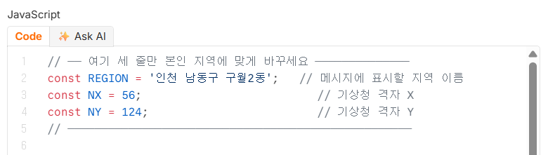
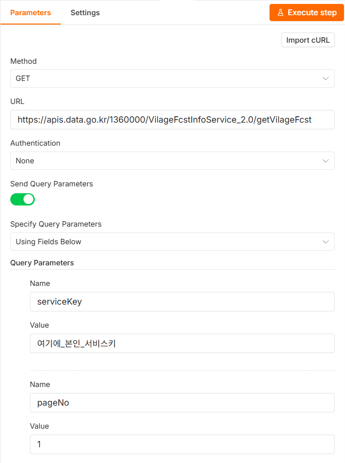

Code 노드 하나는 요청 전 값 계산, 다른 하나는 응답을 문장으로 가공. AI 노드는 없음.
따라하기
인증키 준비하기 — 두 가지 중 어느 것인지 확인
공공데이터포털 마이페이지에서 인증키를 보면 두 가지가 나란히 있습니다.
일반 인증키(Encoding)와
일반 인증키(Decoding)입니다.
Decoding 키를 쓰세요
n8n은 값을 보낼 때 알아서 한 번 변환합니다. 이미 변환된
Encoding 키를 넣으면 두 번 변환되어 기상청 쪽에서 등록되지 않은
키로 인식합니다. "키를 분명히 발급받았는데 등록되지 않은 키라고 나온다"는
문제의 열에 아홉은 이것입니다.
Decoding 키에는 +,
/, 끝에 == 같은 기호가
섞여 있습니다. 그 모습이면 맞게 고른 것입니다.
키를 복사해 메모장에 잠시 붙여둡니다.
새 워크플로우와 시각 트리거
새 워크플로우를 만들고 이름을 P4 날씨 알리미로
바꿉니다. 캔버스 가운데 +를 눌러
Schedule Trigger를 고르고, P2와 같은 방법으로
Days · Trigger at Hour7am · Trigger at Minute0으로 설정합니다.
첫 번째 Code 노드 — 발표시각 계산
트리거 오른쪽 +를 누르고
Code를 고릅니다.
Language는 기본값
JavaScript 그대로 둡니다.
코드 칸에 원래 들어 있던 예시 내용을 전부 지우고 아래를 그대로
붙여넣습니다.
// ── 여기 세 줄만 본인 지역에 맞게 바꾸세요 ──────────────
const REGION = '인천 남동구 구월2동'; // 메시지에 표시할 지역 이름
const NX = 56; // 기상청 격자 X
const NY = 124; // 기상청 격자 Y
// ───────────────────────────────────────────────────
// 기상청 단기예보는 02·05·08·11·14·17·20·23시에 발표되고
// 발표 약 10분 뒤부터 받아올 수 있습니다.
const now = new Date(Date.now() + 9 * 60 * 60 * 1000); // UTC -> 한국 시각
const baseTimes = [23, 20, 17, 14, 11, 8, 5, 2];
const pad2 = (n) => String(n).padStart(2, '0');
const DAY = 24 * 60 * 60 * 1000;
// 현재 시각에서 10분을 뺀다. 자정 직후면 날짜도 함께 전날로 넘긴다.
let day = now;
let mins = now.getUTCHours() * 60 + now.getUTCMinutes() - 10;
if (mins < 0) {
mins += 24 * 60;
day = new Date(day.getTime() - DAY);
}
let pickHour = baseTimes.find((h) => h <= Math.floor(mins / 60));
if (pickHour === undefined) {
pickHour = 23; // 02시 이전이면 전날 23시 발표분
day = new Date(day.getTime() - DAY);
}
const base_date = `${day.getUTCFullYear()}${pad2(day.getUTCMonth() + 1)}${pad2(day.getUTCDate())}`;
const base_time = pad2(pickHour) + '00';
return [{ json: { base_date, base_time, nx: NX, ny: NY, region: REGION } }];
이 코드가 하는 일 (읽지 않아도 됩니다)
기상청은 하루 여덟 번만 예보를 새로 냅니다 — 새벽 2시, 5시, 8시…
이런 식입니다. 데이터를 받아오려면 "몇 시 발표분을 달라"고 정확히
지정해야 하는데, 아직 발표되지 않은 회차를 요청하면 빈 응답이 옵니다.
이 코드는 지금 시각을 보고 "가장 최근에 발표된 회차"를 계산합니다.
아침 7시에 실행되면 5시 발표분을 고르는 식입니다.
바꿀 곳은 맨 위 세 줄뿐입니다
그대로 두면 인천 남동구 구월2동 날씨가 옵니다. 실습을 확인하는
데는 지장이 없으니, 우선 그대로 두고 끝까지 진행한 뒤 나중에 바꿔도 됩니다.
본인 동네로 바꾸려면 NX·NY에
들어갈 숫자가 필요합니다. 공공데이터포털의 기상청 단기예보 API 페이지에서
내려받는 활용가이드 문서(엑셀 파일) 안에 전국 읍·면·동별 격자
X·Y 값이 표로 정리되어 있습니다. 본인 동네를 찾아 두 숫자를 옮겨 적고,
REGION에는 메시지에 표시할 이름을 아무렇게나
적으면 됩니다.
[그림 P4-2] 붙여넣은 코드의 맨 위 다섯 줄. 줄표(──) 사이의 2·3·4번 줄만 바꾸면 됩니다

코드 칸 위에 Code와
Ask AI 두 개의 탭이 있습니다.
Code 탭에 붙여넣는 것이 맞습니다.
Ask AI는 AI에게 코드를 대신 짜달라고 시키는 기능이라
이번에는 쓰지 않습니다.붙여넣은 뒤 왼쪽 줄 번호가 보이면 잘 들어간
것입니다. 1번 줄이 // ── 여기 세 줄만…으로 시작하지
않는다면 원래 있던 예시 코드가 위에 남아 있는 것이니, 칸 안을 전부 지우고
(Ctrl+A →
Delete) 다시 붙여넣으세요.
그 아래 Authentication은
None 그대로 둡니다. 인증키를 헤더가 아니라 주소
뒤에 붙여 보내기 때문입니다.
그다음 Send Query Parameters 스위치를 켭니다.Specify Query Parameters가
Using Fields Below로 나타나면 그대로 두고, 그 아래
Query Parameters에서
Name·Value 한 쌍씩 아래
여덟 개를 순서대로 채웁니다. 쌍을 다 채울 때마다 맨 아래
Add Parameter를 눌러 다음 칸을 만듭니다.
serviceKey → 1번에서 복사한 Decoding 인증키(글자 그대로) pageNo → 1 numOfRows → 300 dataType → JSON base_date → 표현식 모드로 바꾸고 {{ $json.base_date }} base_time → 표현식 모드로 바꾸고 {{ $json.base_time }} nx → 표현식 모드로 바꾸고 {{ $json.nx }} ny → 표현식 모드로 바꾸고 {{ $json.ny }}
앞의 네 개는 항상 같은 값이라 글자 그대로 적고, 뒤의 네
개는 앞 Code 노드가 계산해준 값이라 표현식으로 가져옵니다.
뒤 네 칸은 각각 따로 표현식 스위치를 눌러야 합니다.
이 노드가 하는 일
지금까지 쓴 Google Sheets나
Telegram 노드는 n8n이 그 서비스 전용으로 미리 만들어둔
것이었습니다. 기상청은 그런 전용 노드가 없으므로,
"이 주소로 이런 값들을 보내달라"고 직접 적어주는 것입니다.
dataType=JSON은 "사람 말고 기계가 읽기 좋은 형태로
달라"는 뜻입니다.
[그림 P4-3] Send Query Parameters를 켜고 첫 두 쌍(serviceKey·pageNo)을 채운 모습. 아래로 여섯 쌍이 더 이어집니다

그림의 serviceKey 값 자리에는
자리표시자가 들어 있습니다. 여기에 본인 Decoding 인증키를
붙여넣으세요. 맨 위 Import cURL 버튼은 쓰지
않습니다.
여기서 한 번 실행해보기
다음 단계로 넘어가기 전에 이 노드까지만 확인합니다.
HTTP Request 노드 안의
Test step(이 단계만 실행)과 비슷한 문구의 버튼을
누릅니다.
오른쪽 OUTPUT 패널에 response 아래로
fcstDate, fcstTime,
category, fcstValue 같은
이름이 잔뜩 나오면 성공입니다. 이게 기상청이 보내준 가공 전 날씨
데이터입니다.
여기서 실패하면 뒤 단계를 아무리 잘 만들어도 소용없습니다.
안 될 때 항목을 먼저 확인하고 넘어가세요.
두 번째 Code 노드 — 메시지 가공HTTP Request 오른쪽 +를
누르고 Code를 다시 하나 고릅니다. 코드 칸을 전부
지우고 아래를 붙여넣습니다.
const region = $('발표시각 계산').first().json.region;
const body = $input.first().json;
const items = body?.response?.body?.items?.item;
// 키가 틀렸거나 발표 전이면 예보가 오지 않습니다. 그때도 알려주고 끝냅니다.
if (!items || !Array.isArray(items)) {
const code = body?.response?.header?.resultCode ?? '알 수 없음';
const msg = body?.response?.header?.resultMsg ?? '응답을 읽지 못했습니다';
return [{ json: { message: `기상청 API 오류 (${code}): ${msg}\n서비스키와 발표시각을 확인하세요.` } }];
}
// 가장 이른 예보 시각 한 회차만 대표로 씁니다.
const d0 = items[0].fcstDate;
const t0 = items[0].fcstTime;
const pick = (cat) =>
items.find((i) => i.category === cat && i.fcstDate === d0 && i.fcstTime === t0)?.fcstValue;
const tmp = pick('TMP'); // 기온
const pop = pick('POP'); // 강수확률
const reh = pick('REH'); // 습도
const wsd = pick('WSD'); // 풍속
const sky = pick('SKY'); // 하늘상태
const pty = pick('PTY'); // 강수형태
const tmn = items.find((i) => i.category === 'TMN')?.fcstValue; // 일 최저
const tmx = items.find((i) => i.category === 'TMX')?.fcstValue; // 일 최고
const skyMap = { '1': '☀️ 맑음', '3': '⛅ 구름많음', '4': '☁️ 흐림' };
const ptyMap = { '0': '없음', '1': '🌧 비', '2': '🌨 비/눈', '3': '❄️ 눈', '4': '🌦 소나기' };
const t = Number(tmp);
let tip;
if (t <= 0) tip = '🧥 매우 추워요. 두껍게 입으세요!';
else if (t <= 10) tip = '🧣 쌀쌀해요. 외투를 챙기세요.';
else if (t >= 28) tip = '🥵 더워요. 수분 보충 잊지 마세요.';
else tip = '😊 활동하기 좋은 날씨예요.';
if (Number(pop) >= 50 || (pty && pty !== '0')) tip += '\n☔ 우산을 챙기세요!';
let temp = `${tmp}°C`;
if (tmn && tmx) temp += ` (최저 ${tmn}°C / 최고 ${tmx}°C)`;
else if (tmn) temp += ` (최저 ${tmn}°C)`;
else if (tmx) temp += ` (최고 ${tmx}°C)`;
const message = [
`🌤 오늘의 날씨 (${region})`,
`예보 시각: ${t0.slice(0, 2)}시`,
'',
`하늘: ${skyMap[sky] ?? '정보 없음'}`,
`강수: ${ptyMap[pty] ?? '없음'} (확률 ${pop}%)`,
`기온: ${temp}`,
`습도: ${reh}%`,
`풍속: ${wsd}m/s`,
'',
tip,
].join('\n');
return [{ json: { message } }];
이 코드가 하는 일 (읽지 않아도 됩니다)
기상청 데이터는 TMP(기온),
POP(강수확률),
SKY(하늘상태)처럼 암호 같은 약자로 옵니다.
하늘상태는 숫자로 와서 1이 맑음,
3이 구름많음입니다.
이 코드는 그 약자와 숫자를 사람이 읽는 말로 바꾸고, 기온에 따라
"외투를 챙기세요" 같은 한 줄 조언을 붙여 완성된 메시지 하나를
만듭니다. 결과는 message라는 이름으로 나옵니다.
맨 첫 줄의 노드 이름을 확인하세요
첫 줄 $('발표시각 계산')은 P3에서 배운 그
문법입니다 — 두 칸 앞의 Code 노드로 거슬러 올라가 지역 이름을 가져옵니다.
그 노드의 제목이 정확히 발표시각 계산이어야
합니다. 아직 이름을 안 바꿨다면 다음 단계에서 바꾼 뒤 다시 실행하세요.
텔레그램으로 보내기
오른쪽 +를 누르고 Telegram을
고릅니다. P1에서 만든 자격증명을 고르고,
Chat ID에 본인 chat id 숫자를 넣습니다.
Text 칸은 표현식 모드로 바꾸고
{{ $json.message }}를 입력합니다.
앞 Code 노드가 메시지를 통째로 완성해두었으므로 여기서는
그것을 그대로 꺼내 보내기만 하면 됩니다.
노드 이름 정리하기
노드 제목을 각각 더블클릭해 아래 이름으로 바꿉니다.
매일 아침 7시 ·
발표시각 계산 ·
기상청 API 호출 ·
메시지 가공 ·
텔레그램 발송
첫 Code 노드 이름은 반드시 발표시각 계산으로
두 번째 Code 노드의 첫 줄이 이 이름을 부르고 있습니다. 다른 이름을 쓰면
"노드를 찾을 수 없다"는 오류가 납니다.